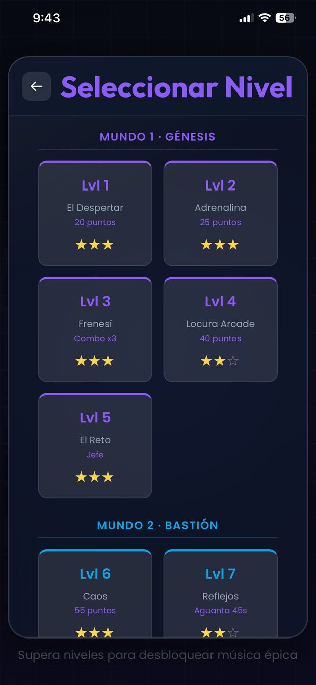
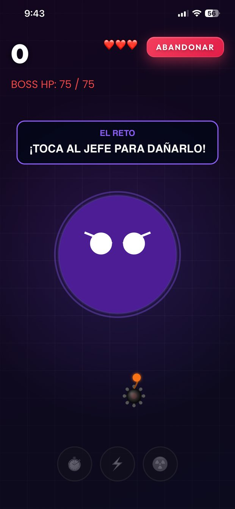
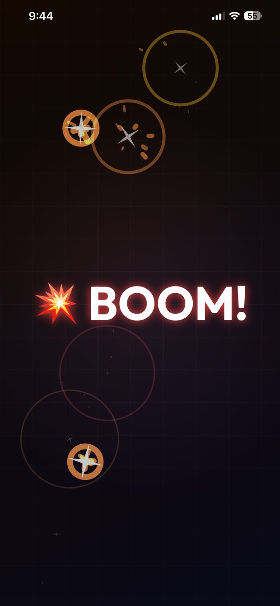

Producto propio · Publicidad y cosméticos · iPhone
Globoom
Arcade de partidas cortas, pensado para el trayecto en metro y para jugarse sin conexión.
Para qué momento está hecho
Un juego no resuelve un problema: ocupa un hueco. El de Globoom es concreto y se puede describir: los cinco minutos muertos del metro, la cola del supermercado, la sala de espera. Un hueco en el que la cobertura falla, no apetece crear una cuenta y no hay tiempo para aprender nada.
Ese hueco es el que dicta las tres restricciones que mandan sobre todo lo demás del juego: la partida cabe dentro y no se alarga —por eso la dificultad se bajó sin tocar la duración de los niveles—, funciona sin conexión, y se juega desde el primer segundo: la clasificación global usa autenticación anónima, así que competir no cuesta rellenar un formulario.
Y lo que protege ese hueco es lo que el juego no hace. La configuración por defecto de la publicidad lo llena todo de anuncios porque es lo que más ingresos aparenta dar; aquí no hay ninguno durante la partida ni al reintentar. Si interrumpes un hueco de cinco minutos, ya no queda hueco.
Poder renunciar a esos ingresos sin discutirlo tiene una razón escrita: el objetivo de Globoom es demostrar capacidad de producto, no facturar. Cuando sabes qué métrica manda, las decisiones dejan de ser opiniones.
El producto, pantalla a pantalla
Capturas del juego real. Al lado de cada una, lo que hay detrás de lo que se ve — y de lo que deliberadamente no está.

Tres modos para tres tipos de sesión
No son tres formas de jugar lo mismo: son tres respuestas a cuánto tiempo tienes hoy.
La sesión que dura semanas
Modo Niveles: progresión larga, con mundos y jefes. Es lo que da la sensación de estar avanzando en algo.
La sesión de cinco minutos
Modo Hardcore, infinito y con clasificación global. Para cuando no quieres progresar, quieres competir.
La sesión de un minuto
Reto diario con racha y premio. Es la mecánica para el día en que no hay tiempo de jugar: abrir, jugar una vez, no perder la racha.
El récord, en la portada
No en un submenú de estadísticas. Es el número que hace volver, así que es lo último que se ve antes de pulsar.
Opciones de anuncios a la vista
Privacidad y opciones de publicidad enlazadas desde la portada, no enterradas en ajustes. El consentimiento RGPD hecho para que se use, no para cumplir el expediente.

Treinta niveles, no un nivel repetido treinta veces
La diferencia entre una progresión y una lista está en si cada paso pide algo distinto.
Los mundos tienen nombre
Génesis, Bastión. Un nombre se recuerda; «Mundo 2» no. Cuesta lo mismo y el jugador sabe decir dónde se quedó.
Cada nivel pide otra cosa
Llegar a puntos, encadenar un combo, aguantar 45 segundos, matar a un jefe. Si todos los niveles piden lo mismo, el jugador se va en el sexto.
Las tres estrellas
Son el único motivo para repetir un nivel ya superado. Sin ellas, el contenido se consume una vez y se acaba el juego.

Lo que no hay en pantalla es la decisión
Durante la partida no hay banner, ni intersticial, ni botón de comprar nada.
Vidas y puntuación, nada más
Ni un banner. La configuración por defecto del SDK de anuncios sí lo pone; quitarlo fue una decisión explícita y cuesta ingresos.
El objetivo siempre visible
«Aguanta: 34s». La partida tiene una meta concreta en vez de solo un marcador que sube, que es lo que la hace terminable.
Los potenciadores se ganan
Ninguno se compra con dinero. En un juego con clasificación global, vender ventaja rompe la clasificación, que es justo lo que sostiene el modo infinito.

Cambiar la regla, no subir el número
Un jefe difícil no es un nivel normal con más globos. Es otro verbo.
Barra de vida del jefe
Convierte el nivel en una carrera contra algo concreto en vez de contra un contador. El jugador ve cuánto le falta, y eso es lo que evita que abandone a la mitad.
La regla se explica en pantalla
«¡Toca al jefe para dañarlo!». Sin tutorial aparte y sin pantalla de ayuda: si una mecánica necesita un manual, el problema es la mecánica.

Una economía sin dinero dentro
Todo se paga jugando. La escala de precios es lo que sostiene el modo infinito.
Saldo en puntos, no en monedas compradas
No hay pasarela de pago en el juego. Los cosméticos son la recompensa de jugar, no un producto.
Siempre algo alcanzable
De 1.000 a 40.000 puntos. La escala está puesta para que el jugador tenga a la vez un objetivo a un par de partidas y otro a muchas: eso es lo que le da sentido al modo infinito.
Lo equipado se marca, no se oculta
Lo que ya tienes sigue en la tienda con su etiqueta. Ver lo conseguido al lado de lo que falta es lo que hace que la lista funcione como progresión.

Todo el juego existe para que esto pase a menudo
Si tuviera que borrar todo salvo una cosa, sería esta.
La reacción en cadena
Es lo único que alguien recuerda de una partida. Las decisiones de dificultad, de duración de nivel y de potenciadores están todas calibradas para que esto ocurra a menudo pero no siempre.
Decisiones documentadas
Dos de los siete casos salen de aquí: uno de monetización y otro de criterio para publicar.
Cómo se llevó la publicación
Alcance recortado a propósito
Salida solo en iPhone. iPad, Mac y Vision Pro quedaron fuera por no estar probados, y Android para una segunda fase. Prefiero publicar una plataforma menos antes que publicar una sin verificar.
Bloqueantes explícitos
Roadmap y backlog documentados, con una lista escrita de lo que impedía publicar. El fallo de la clasificación estaba en esa lista: no salía hasta estar arreglado.
Release de punta a punta
TestFlight, ficha de App Store Connect, capturas, clasificación por edad, consentimiento RGPD para publicidad y CI/CD en la nube.
Sin login para competir
La clasificación global usa autenticación anónima: el jugador nunca ve una pantalla de registro. Competir no debería costar un formulario.
Estado
A 20 de septiembre de 2026
Versión 1.0 aprobada en la App Store en septiembre de 2026 y disponible fuera de la Unión Europea. En la UE, incluida España, queda pendiente de que Apple valide el trámite del Reglamento de Servicios Digitales (DSA).
Todavía no hay datos de descargas ni de retención, y no aparece ninguno inventado.